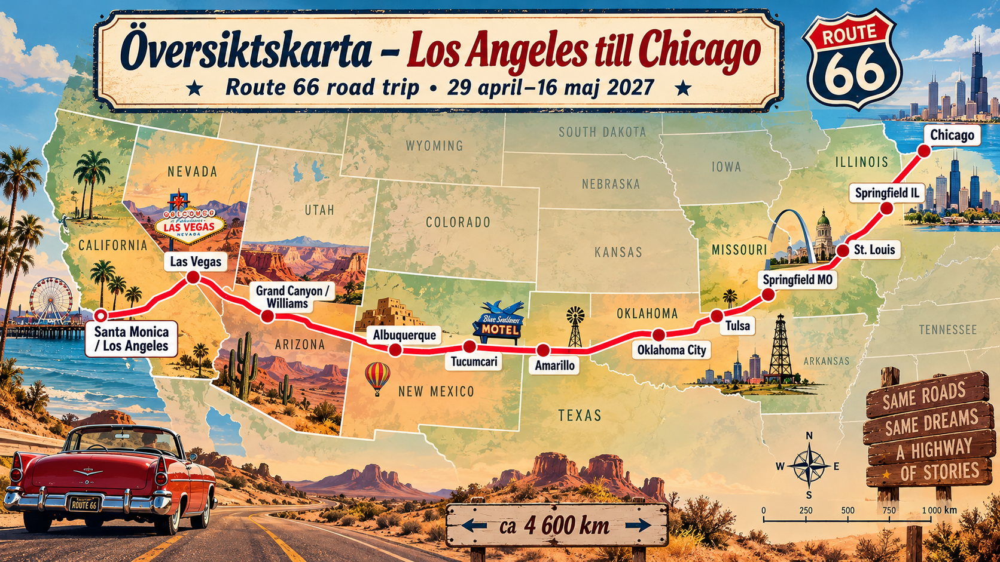
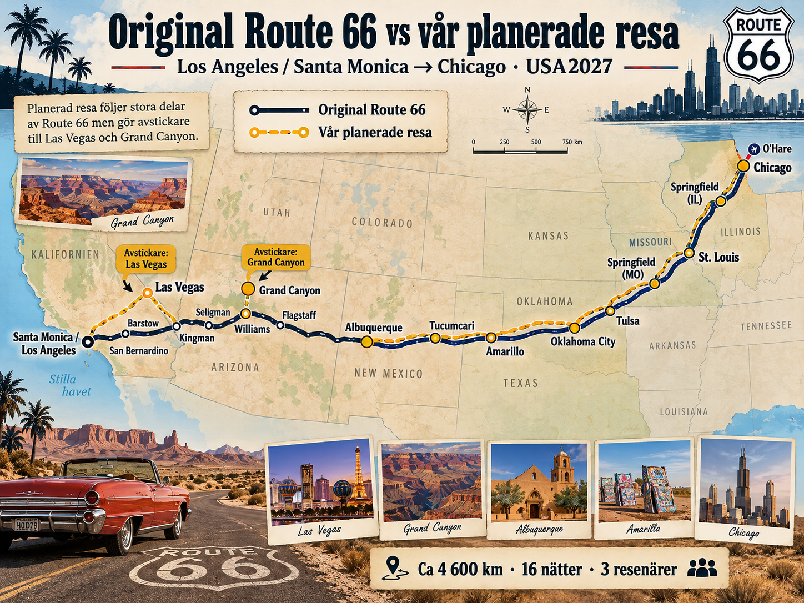
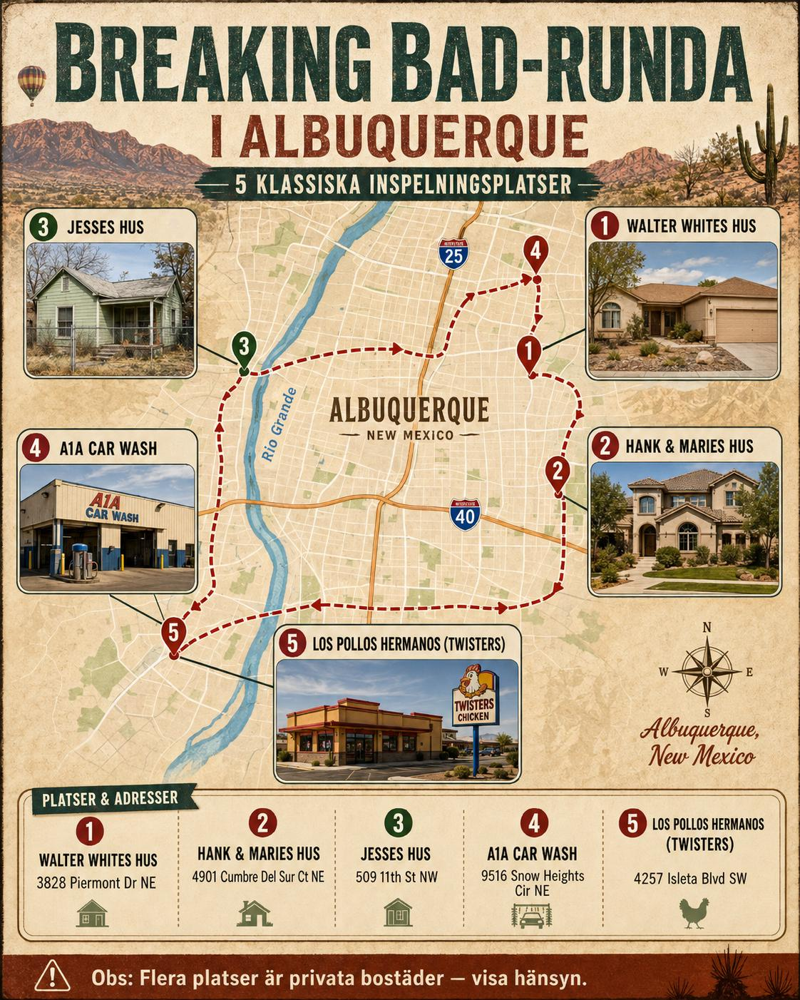

Route 66 · 29 april–15 maj.
Landning i Los Angeles den 29 april, en natt i Santa Monica och tidig start mot Las Vegas nästa morgon. Hemresa från Chicago O'Hare den 15 maj.
Översiktskarta över rutten
Hela resan från Los Angeles till Chicago med planerade stopp längs vägen.

Start i LA
En lugn första kväll i Santa Monica. Route 66-startbilden vid piren och sedan tidig avfärd mot Las Vegas.
Motellkänsla
The Lodge, El Vado, Blue Swallow och Rockwood är prioriterade boenden som är en del av själva Route 66-upplevelsen.
Resebudget
Rekommenderad gruppbudget exklusive flyg, inklusive ungefär 10 % reserv.
Flyg
Resan är bestämd med SAS via Köpenhamn. Utresa torsdag 29 april och hemkomst till Stockholm söndag 16 maj 2027.
Utresa · torsdag 29 april
09:55 · Stockholm Arlanda (ARN) → Köpenhamn (CPH)
SAS · anslutning i Köpenhamn
14:15 · CPH → Los Angeles (LAX)
SAS SK931
Ankomst LAX: 16:50
Efter landning: hämta hyrbil och kör till Santa Monica för första natten.
Hemresa · lördag 15 maj
19:15 · Chicago O'Hare (ORD) → Köpenhamn (CPH)
SAS · nattflyg
Ankomst CPH: 10:45 söndag 16 maj
11:50 · CPH → Stockholm Arlanda (ARN)
Ankomst ARN: 13:05 söndag 16 maj
Sista natten 14–15 maj nära O'Hare för en lugn bilretur och incheckning.
Hyrbil
Envägshyra LAX → ORD för tre personer och bagage.
Midsize SUV
Toyota RAV4, Nissan Rogue, Hyundai Tucson eller liknande. Tillräckligt för 3 vuxna, 3 större väskor och handbagage.
Hämta: LAX · 29 april
Lämna: ORD · 15 maj
18 000 kr inkl. försäkringsmarginal
Hyrbil cirka 15 000 kr + cirka 3 000 kr marginal för CDW/LDW, stöldskydd, zero excess och envägsrelaterade avgifter.
Kontrollera fria mil, extra förare, deposition och bränslepolicy före bokning.
Motell & hotell
16 nätter. Priserna är planeringspriser i SEK för tre personer och ska ersättas med bokat slutpris när respektive boende är klart.
Översiktskarta
Från Santa Monica till sista natten vid O’Hare. Klicka på en numrerad markör för hotellbild, datum, rum, pris, faciliteter och bokningslänkar.
| Datum | Ort | Boende | Rum | Budget | Bokat pris | Avvikelse | Prioritet |
|---|
Varje stopp, bild för bild
Mer om läge, rum, faciliteter och varför respektive boende passar just den här resan.
Dag för dag.
Detaljerad körplan med ungefärliga avstånd, stopp och övernattningar. Körsträckorna varierar beroende på hur mycket gammal Route 66 ni väljer framför Interstate.
Original Route 66 och vår planerade resa
Se var resan följer den klassiska vägen och var den gör avstickare till Las Vegas och Grand Canyon.

Breaking Bad-runda
En kul extrarunda under vilodagen i Albuquerque med fem klassiska inspelningsplatser från Breaking Bad. Kartan samlar Walter Whites hus, Hank & Maries hus, Jesses hus, A1A Car Wash och Los Pollos Hermanos/Twisters.
Obs: flera platser är privata bostäder. Titta från allmän plats, stör inte de boende och följ skyltning på plats.
Öppna kartan större →

Frukost & lunch
Förslag på klassiska diners längs vår väg från Los Angeles till Chicago.
Hela resebudgeten.
Förifylld kalkyl för tre personer. Du kan ändra beloppen — de sparas lokalt i din webbläsare.
Vad kostar varje resdag?
Här är hela grundbudgeten fördelad på resan. Bilposten är en daglig andel av hyrbil + hyrbilsförsäkring. Flygbiljetter ingår inte.
| Datum | Plats / natt | Hotell budget | Bokat hotell | Avvikelse hotell | Mat | Bil inkl. förs. | Bensin | Park./tull | Aktiviteter | Övrigt | Dagssumma | Löpande |
|---|
Bokningsordning & att göra.
Bocka av i takt med att resan blir bokad.
Vår resedagbok.
Skriv ner minnen, platser och händelser längs vägen.
Sparas automatiskt i den här webbläsaren. Exportera en säkerhetskopia för att flytta all planeringsdata till en annan enhet.